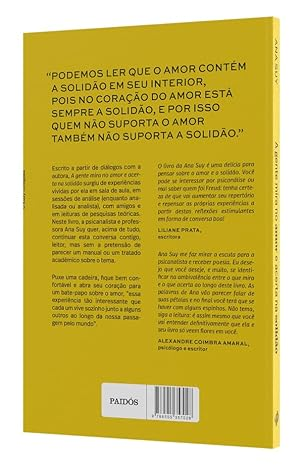
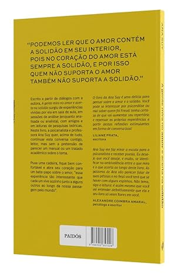

A gente mira no amor e acerta na solidão
por Ana Suy
 

Sinopse
Em "A gente mira no amor e acerta na solidão", Ana Suy nos conduz por uma jornada poética e profundamente humana sobre os encontros e desencontros do amor contemporâneo. Com uma linguagem que oscila entre o lírico e o cotidiano, a autora explora as múltiplas faces do amor e da solidão em relacionamentos que se constroem e desfazem nos tempos atuais.
O livro se estrutura em três partes que refletem o ciclo dos relacionamentos: "Mira" (a expectativa e o desejo), "Acerte" (a concretização e os desafios) e "Solidão" (o desfecho e o renascimento). Cada seção é composta por poemas, microcontos e textos reflexivos que formam um mosaico emocional sobre amar e ser amado no século XXI.
Ana Suy consegue a proeza de transformar sentimentos complexos em palavras acessíveis, criando uma obra que ressoa profundamente com qualquer um que já tenha amado, perdido ou se redescoberto na solidão.
Sumário
- Com licença!
- Apresentação
- Capítulo 1 - Amor contém solidão
- Capítulo 2 - No inicio era amor?
- Capítulo 3 - Quem ainda se interessa pelo amor?
- Capítulo 4 - De onde vem essa ideia de que há metade da laranja?
- Capítulo 5 - Nosso primeiro amor: o EU
- Capítulo 6 -
- Capítulo 7 - Solidão x Sentimento de solidão
- Capítulo 8 - Amar não livra ninguém da solidão
- Capítulo 9 - O amor como elaboração de luto pelo que se pensava que era amor
- Capítulo 10 - Por que tanta pressa?
- Capítulo 11 - A caixa de pandora da linguagem
- Capítulo 12 - O amor precisa de tempo
- Capítulo 13 - Elogio à infelicidade
- Capítulo 14 - Amamos aquilo que nos interroga
- Capítulo 15 - O amor acaba
Frases Destaque
"Não queremos ser amados apenas pela presença, mas queremos ser amados especialmente pela nossa falta."
"Quem sou eu para além do que já sei? É a pergunta que nos fazemos na vida, e a pessoa do nosso amor tende a ser aquela que nos dá alguma pista de que tem alguma resposta."
"Quando perdemos alguém, então, não perdemos bem esse alguém fora de nós, mas perdemos muito especialmente quem éramos para o outro – e, ainda, a imagem que tínhamos de quem éramos para esse outro."
"Os amantes estão com frequência a pedir palavras uns dos outros. Porque são as palavras que fazem ponte entre a solidão de um e a solidão do outro no amor."
Sobre a Autora
Ana Suy (São Paulo, 1985) é uma das vozes mais originais da nova geração de escritores brasileiros. Formada em Psicologia e Letras, combina seu conhecimento acadêmico com uma sensibilidade poética única para explorar as relações humanas.
Publicou seu primeiro livro de poemas, "Rastros", em 2012, seguido por "Entre Linhas" (2015) e "Palavras que me Habitam" (2018), todos aclamados pela crítica. "A gente mira no amor e acerta na solidão" (2021) se tornou seu trabalho mais conhecido, permanecendo por 42 semanas na lista dos mais vendidos.
Além de sua carreira literária, Ana conduz oficinas de escrita terapêutica e participa regularmente de eventos culturais pelo país. Seus textos exploram temas como amor, identidade, solidão e crescimento pessoal, sempre com uma linguagem acessível que toca o leitor de maneira profunda.
Conheça a Editora
Resenhas dos Leitores
Mariana Costa
"Este livro chegou em um momento crucial da minha vida. Cada página parece falar diretamente comigo, como se a Ana soubesse exatamente o que eu estava sentindo. Os poemas da Parte 3 me ajudaram a superar um término difícil. Recomendo para qualquer um que esteja passando por um momento de transição amorosa."
Carlos Eduardo
"Não sou muito de ler poesia, mas esse livro me surpreendeu. A linguagem é direta e impactante, sem ser simplória. Alguns textos são como socos no estômago, mas daqueles que fazem bem. A parte sobre 'as palavras não ditas' é especialmente poderosa. Perde um ponto só porque queria que fosse mais longo!"
Juliana Martins
"Comprei por indicação de uma amiga e não me arrependi. A Ana Suy tem um talento incrível para capturar sentimentos complexos em poucas palavras. Já marquei várias páginas para reler nos momentos difíceis. O design do livro também é lindo, capa dura e com aquelas folhas amarelas que amo."